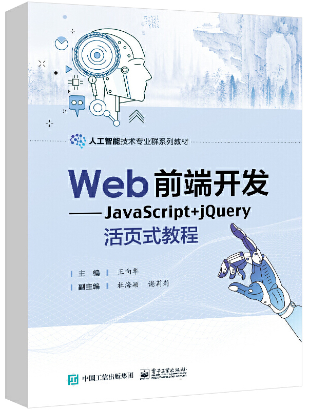

首页 > 书籍下载
《Web前端开发——JavaScript+jQuery活页式教程》PDF下载（高清完整版）
|  | 作者：王向华 |
| 出版时间：2022年12月01日 | |
| 出版社：电子工业出版社 | |
| ISBN：9787121448171 | |
| 总页数：313 |
这是一本 Web 前端开发的入门教材，内容通俗易懂、突出实践，可作为高等院校计算机相关专业的教材，也可供初学者和编程爱好者自学使用。
这里提供的是《Web前端开发——JavaScript+jQuery活页式教程》的高清 PDF 下载，内容完整，附带目录标签。
这本书共包含了12个学习活动，采用活页式教材的编写理念，将各部分知识模块化，整体内容由浅入深，精简理论知识，注重实践练习，使读者更加容易理解和掌握。
作为一名正在从事 Web 前端开发的程序员，这本书给我最大的感触就是形象生动，学起来很顺畅，只要跟着书中的节奏，就可以更高效的掌握其中的逻辑和技能。所以不管你是基础知识扎实还是薄弱，跟着这本书学习肯定会有很大的收获！
书籍目录
- 学习活动1 输入输出数据
- 学习任务1 引入JavaScript脚本
- 学习任务2 声明JavaScript变量
- 学习任务3 输入输出简单数据
- 学习任务4 输入输出表达式
- 学习活动2 控制分支语句程序
- 学习任务1 使用单分支语句模拟话费充值
- 学习任务2 使用双分支语句判断成绩
- 学习任务3 使用多分支语句判断年龄区间
- 学习任务4 使用switch语句控制图片显示
- 学习活动3 控制程序循环执行
- 学习任务1 使用while循环语句输出表格
- 学习任务2 使用do-while循环语句计算水仙花数
- 学习任务3 使用for循环语句输出图片
- 学习任务4 控制循环流程
- 学习活动4 存储并编辑数组数据
- 学习任务1 创建与遍历一维数组
- 学习任务2 创建、引用和遍历关联数组
- 学习任务3 创建与遍历二维数组
- 学习任务4 使用数组相关的方法
- 学习任务5 数组排序
- 学习活动5 JavaScript代码模块化
- 学习任务1 声明和调用函数
- 学习任务2 定义变量作用域
- 学习任务3 使用匿名函数
- 学习任务4 使用回调函数
- 学习任务5 使用闭包函数
- 学习活动6 JavaScript对象
- 学习任务1 String对象属性与方法
- 学习任务2 Math对象属性与方法
- 学习任务3 Date对象属性与方法
- 学习任务4 自定义对象
- 学习活动7掌握 JavaScript中BOM操作
- 学习任务1 使用window对象控制浏览器
- 学习任务2 使用location对象控制操作URL
- 学习任务3 使用history对象控制浏览历史
- 学习任务4 使用screen对象获取屏幕信息
- 学习任务5 使用document对象操作文档
- 学习活动8 使用DOM控制页面元素
- 学习任务1 获取页面DOM节点
- 学习任务2 添加与删除页面节点
- 学习任务3 通过DOM编辑节点内容
- 学习任务4 使用DOM属性控制节点样式
- 学习活动9 JavaScript事件处理
- 学习任务1 绑定事件
- 学习任务2 常见页面事件
- 学习任务3 常见鼠标事件
- 学习任务4 常见键盘事件
- 学习任务5 事件冒泡与事件委托
- 学习活动10 使用jQuery框架处理元素
- 学习任务1 引入和使用jQuery
- 学习任务2 使用jQaaery选择器
- 学习任务3 使用jQuery添加或删除节点
- 学习任务4 使用jQuely设置元素属性
- 学习任务5 使用jQuery设置元素样式
- 学习任务6 使用jQuery设置元素内容
- 学习活动11 基于jQuory的事件处理与动画效果
- 学习任务1 绑定与解绑事件
- 学习任务2 处理jQuery复合事件与事件委托
- 学习任务3 使用jQuery实现预定义动画效果
- 学习任务4 实现自定义动画效果
- 学习活动12 正则表达式
- 学习任务1 创建与使用正则表达式
- 学习任务2 使用元字符控制正则表达式
- 学习任务3 其他方法匹配正则表达式
书籍下载
一键登录，免费下载完整版 PDF，文件名称：《Web前端开发——JavaScript+jQuery活页式教程》.pdf